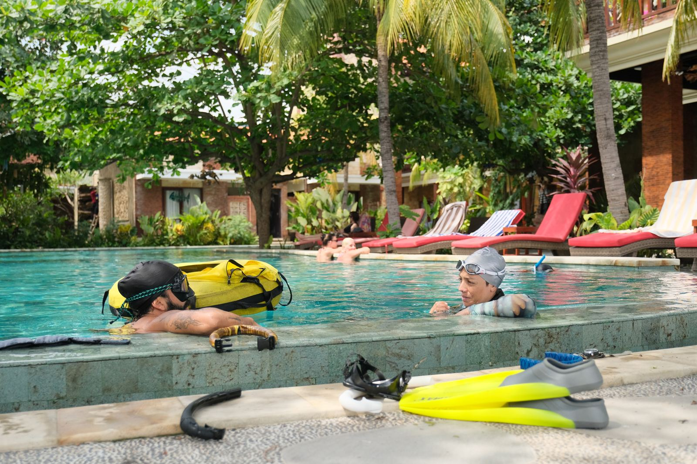

Domů / Voda
Nádech, který vydrží déle.
Vnitřní ponor, retreat V rytmu oceánu na Bali a od léta 2027 kurzy freedivingu.
Vnitřní ponor
Příprava na freediving
Kurz, který propojuje metodiku Molchanovs a AIDA s jógou a prací s dechem. Nejde o čas ani hloubku. Jde o zkušenost, klid a schopnost zůstat v těle i tam, kde by tělo chtělo panikařit.
- 10 lekcí ve studiu a 1 lekce v jámě.
- Skupina 8–10 lidí, uzavřená podpora na WhatsAppu, týdenní domácí úkoly.
- Pro dospělé 30+, kteří rádi zkoušejí nové věci. Nejde o výkon, jde o zážitek.
- Kurz (10 lekcí ve studiu)3 000 Kč
- Lekce v jáměcena

V rytmu oceánu
Retreat na Bali, duben 2027
Retreat, který spojuje jógu, dech a freediving v Amedu na Bali, na jednom z nejkrásnějších míst pro ponor. Prostor zpomalit a ponořit se hlouběji do sebe i do vody.
Další retreat proběhne v dubnu 2027 přesné datum. Program, ubytování, ceny a přihlášku najdeš na stránce retreatu.

Od léta 2027
Kurzy freedivingu
Od léta 2027 otevřu kurzy freedivingu ve vodě. Navážou na Vnitřní ponor a povedou tě od prvních ponorů s bezpečností a klidem.
Táhne tě hloubka?
Napiš mi a pošlu ti termíny dalšího Vnitřního ponoru i retreatu.